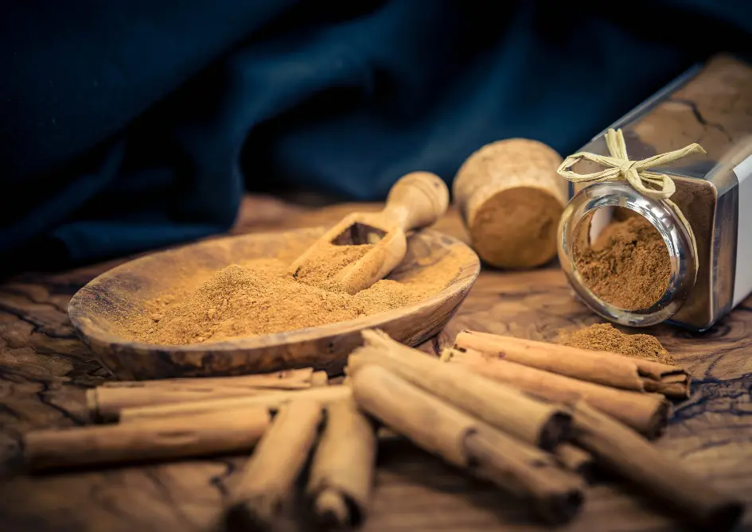

Ceylon Cinnamon Powder
Pure Organic Ceylon Cinnamon - Finely Ground
Experience the sweet, woody aroma of Ceylon Cinnamon Powder, also known as "True Cinnamon." Milled from carefully selected bark of Cinnamomum verum, our cinnamon is ethically sourced from Sri Lanka’s central highlands. Its high cinnamaldehyde content offers rich flavor and remarkable health benefits.
Key Product Highlights
- Origin: Kurunegala, Sri Lanka (Single-origin)
- Processing: Sun-dried and finely ground
- Health Benefits: Regulates blood sugar, anti-inflammatory, antioxidant-rich
- Applications: Bakery, beverages, Ayurvedic remedies, skincare

Product Specifications
| Specification | Details |
|---|---|
| Scientific Name | Cinnamomum verum |
| Origin | Kurunegala, Sri Lanka |
| Form | Fine Powder |
| Cinnamaldehyde | Up to 60% (Aroma Component) |
| Moisture | <10% |
| Color | Warm Tan to Golden Brown |
| Packaging | 100g | 250g | 1kg pouches |
| Shelf Life | 18 months |
How to Use Ceylon Cinnamon Powder
In Cooking & Baking
Sprinkle into baked goods, curries, or beverages like tea and smoothies. Its sweet warmth enhances flavor naturally.
In Herbal Remedies
Use in Ayurvedic teas or with honey and ginger for colds and blood sugar balance. Known for antioxidant power.
Storage Tips
Keep in an airtight jar in a cool, dry place away from light to maintain freshness and aroma.
Bring nature’s finest cinnamon to your kitchen or product line.
Frequently Asked Questions
How is Ceylon Cinnamon different from Cassia?
Ceylon Cinnamon is sweeter, lower in coumarin, and safer for regular consumption than Cassia.
Can I use it in beverages?
Absolutely. Add to teas, coffee, or smoothies for natural sweetness and health benefits.
Is this cinnamon lab-tested?
Yes, all our batches are tested for purity, microbial load, and coumarin content.
Do you offer private labeling?
Yes, we offer custom packaging and private label services for bulk buyers.